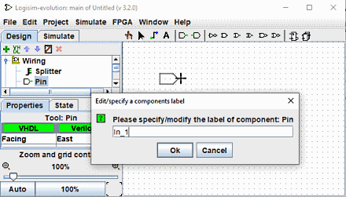

上一节: 导线颜色
自编号标签
此选项允许您放置带有自编号标签的组件，例如 Led_1、Led_2...。 要使用它，请按以下步骤操作：
在资源管理器窗口中选择一个工具，例如 Pin，然后将其移动到工作界面，然后在单击将其放下之前按 < b class="tkeybd">L 键。
输入以数字结尾的标签名称，例如 "In_1".

从现在开始，当您删除此类组件时，它们将自动带有增量标签。 激活该选项后，放置组件之前的阴影会呈现粉红色。
可以同时为不同的组件激活此选项。

要停用，请按照与激活相同的方式进行操作，但使用 A 键。 如果您已激活不同类型组件的自我标签。 您必须为每个组件类型单独停用它。
按键及相关功能
L : 激活功能并设置/修改标签
T ：切换标签可见性
H ：将标签可见性设置为 false（隐藏）
V ：将标签可见性设置为 true（显示）
A : 结束自编号标签功能
下一节: 将组件放置在矩阵中.